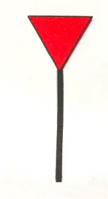
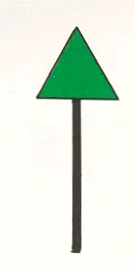
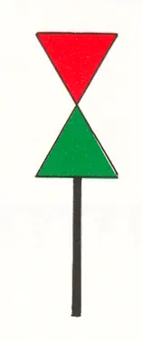

A Vaste tekens
Rijnvaartpolitiereglement 1995
1. Rechterzijde | ||
Kleur Vorm: Topteken: Licht: | rood paal met topteken rode kegel met de punt naar beneden (indien aanwezig) rood periodelicht |  |
2. Linkerzijde | ||
Kleur Vorm: Topteken: Licht: | groen paal met topteken groene kegel met de punt naar boven (indien aanwezig) groen periodelicht |  |
3. Splitsing | ||
Kleur Vorm: Topteken: Licht: | rood-groen paal met topteken rode kegel met de punt naar beneden boven groene kegel met de punt boven (indien aanwezig) wit flikker- of isofaselicht |  |
4. Aftakkingen, uitmondingen en haveningangen | ||
In de nabijheid van aftakkingen, uitmondingen en haveningangen kunnen de oeververdedigingen aan beide zijden gemarkeerd worden tot aan het splitsingspunt door de vaste tekens bedoeld in 1 en 2 (figuren 5 en 6). Een schip dat een haven binnen vaart wordt beschouwd als een opvarend schip. |